Quelques rencontres états-uniennes
Monday, June 29, 2009 9:05:53 PM
Le terme états-uniens est certes très moche, mais il me paraît maintenant difficile d'appeler ces gens les Américains. Et les Chiliens, les Mexicains, les Canadiens ... ?? Ils sont américains aussi, non ?
Bon. Une première rencontre intéressante : Linda et JC. J'attends devant le Walmart de Fulton (Mississippi) quand Linda s'approche de moi, me demande ce que je lis, puis m'invite à dormir chez elle. Je note son adresse (c'est juste à côté).
Quand Francis sort du supermarché tout chargé de denrées, je lui explique le deal. Il est partant et nous achetons vite une plante en pot (le vélo de Francis commence à ressembler à un train indien ou à un camion poubelle napolitain, comme vous préférez). Puis nous filons (tant bien que mal) chez Linda. Elle nous présente son mari, JC, très préoccupé par un petit poussin qui n'est pas au mieux de sa forme. Nous visitons ensemble leur grande maison quand JC nous demande si nous sommes croyants. Je dis que je suis catholique, et Francis explique qu'il est athée. JC réplique qu'il aura donc avec nous une petite conversation.
JC nous demande ensuite si nous sommes mariés. Nous répondons que nous sommes fiancés, et Linda nous montre alors nos deux chambres, séparées. Oups ?!
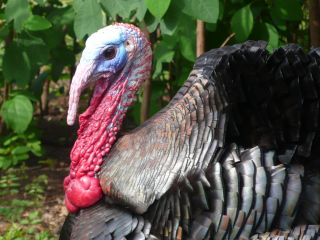
Ceci étant fait, JC nous fait une démonstration de son équipement de chasseur de dindes sauvages. C'est très drôle de le voir camouflé, avec ses vêtements pleins de feuilles, et en train de pousser des petits cris censés imiter l'appel de la femelle. Il nous montre ses trophées de chasse : les barbes des dindes qu'il a tuées. Il y en a moultes. La taille de la barbe augmente avec l'âge, et l'on n'est pas censé tuer des jeunes, mais il y a tout de même quelques petites barbes dans la boîte. Il nous explique que les quotas dans le Mississippi sont de 3 dindes par an et par chasseur. Mais l'année dernière il en a tué 7 : une fois 2 en un tir, une autre fois 3, et une au Tennessee !
Après avoir bien ri, c'est l'heure de la petite discussion.
Linda nous apporte de quoi dîner, et une bible. Et là, JC tente une démonstration de la véracité des écrits bibliques, de l'existence de Jesus, de Dieu et de l'enfer qui attend les brebis égarées comme nous. Il nous fait lire alternativement des passages de la Bible. C'est assez intéressant à voir, mais Francis se sent très mal à l'aise. Linda s'en rend probablement compte car elle demande a JC de passer à la fin de sa démonstration. Nous prétextons la fatigue pour échapper à la fin du discours.
Le lendemain matin, JC nous emmène petit-déjeuner au restaurant, et évite toute allusion biblique. Je pense qu'il s'est pris quelques reproches de sa femme.
Il nous dit juste qu'il a planté la petite graine. Je ne suis pas sûre qu'elle va pousser.
En partant, JC nous a donné quelques prospectus et les deux premières lessons de son mouvement, nommé "Back to the Bible". Parce qu'il existe trop de confessions chrétiennes, celle-ci se veut rassembliste et plus proche des textes bibliques.
Nous refusons une bible : nous sommes assez chargés.
Puis nous quittons nos hôtes, adorables mais un peu trop entreprenants.
Nous passons les semaines qui suivent à parler religions, et philosophie.
Deuxième rencontre : des cyclotouristes, Derek, Hanley et Wim.
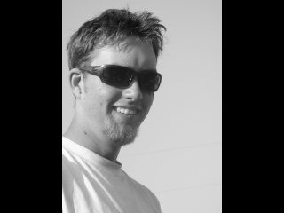
Derek est un jeune Canadien de 22 ans. Il est parti de Vancouver il y a un peu plus d'un an, abandonnant son poste dans une scierie. Son frère l'a suivi à la dernière minute. Et ils sont partis tous les 2 avec pour objectif d'atteindre le sud des Etats-Unis en descendant la côte Ouest. Ce faisant, Derek est devenu accroc et a continué jusqu'au Mexique, qu'il a traversé en 7 jours, et au Guatemala. Ayant un vélo droit de route, il a été confronté à l'omniprésence des pistes en Amerique centrale, et a décidé de repartir vers le Nord. Il a suivi la Underground Railroad avec nous et nous a quitté peu avant Cincinnati, en direction de Boston, puis Halifax et Vancouver. Ce drôle de garçon se nourrit de haricots rouges en boîte à tous les repas, généralement froids et directement dans la boîte pour gagner du temps. Depuis qu'on l'a rencontré, je lui ai appris à faire de la purée en sachet. Et Derek alterne maintenant "beans" et purée.
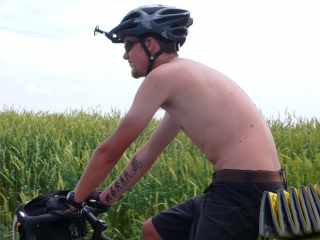
Il aime pédaler doucement avec d'autres, mais quand il pédale seul, il va "stupid fast". Ainsi son premier voyage a vélo totalisera plus de 30000 km en un an et demi. Et il ne compte pas s'arrêter là. Selon nous, c'est un grand espoir du cyclotourisme. A noter, le tatouage qu'il a sur l'avant bras droit...Quand on vous dit que ce gars la est serieux !
Wim et Hanley sont sud-africains et parlent donc l'afrikaans. Nous n'avons pas retenu grand chose de nos leçons, sauf 2 expressions : " laka bru" ("c'est cool mon pote") et "bak ballas" (litéralement "se les dorer au soleil", en pratique "profiter du bon temps").
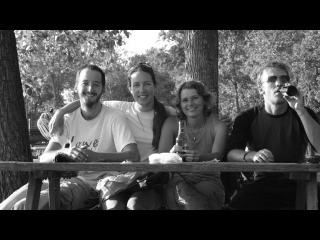

Wim vient d'une famille nombreuse et n'a pas pu aller à l'université, car il n'y a pas vraiment de système d'éducation (ou de santé d'ailleurs) public en Afrique du Sud ; les universités coutent donc très cher. Il est informaticien "bases de donnees" autodidacte, a travaillé entre autres à Téhéran 6 mois et à Londres 1 an pour des compagnies de téléphonie mobile. Il aimerait créer sa propre entreprise en rentrant en Afrique du Sud.
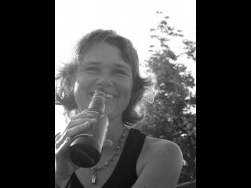
Hanley a un diplôme d'enseignante mais ne souhaite pas enseigner. Elle a travaillé dans le domaine de l'édition et souhaiterait écrire des romans. Elle a déjà publié quelques nouvelles en afrikaans dans des revues.
Nous avons appris beaucoup de choses sur l'Afrique du Sud grâce à eux. Apparemment, l'insécurité est un gros problème actuellement. Dès que les habitants ont assez d'argent, ils se font construire un grillage électrifié autour de leur maison. Le vote des Noirs a été accepté par référendum en 1993 et les premières élections au suffrage universel ont eu lieu en 1995 !!
Wim et Hanley ont connu la ségrégation, avec les écoles pour blancs, les plages pour blancs, les toilettes pour blancs... Apparemment, le gouvernement a introduit des quotas pour que les Noirs aient accès aux emplois, mais n'a pas créé en parallèle un système d'éducation pour tous. Du coup, les patrons se doivent d'employer des Blacks, mais ceux-ci ne sont souvent pas qualifiés, et ça ne marche donc pas. Ils les renvoient les uns après les autres. Du coup il y a beaucoup d'instabilité et de pauvres.
Ils ont introduit des lois interdisant les propos à caractère raciste, et il y a apparemment de nombreux procès. Dans les campagnes et chez les anciennes générations, les pensées racistes sont encore monnaie courante. Les blancs se font parfois encore appeler "Mister", alors que c'est théoriquement interdit.
Les jeunes espèrent des jours meilleurs mais beaucoup fuient. La soeur de Wim a fuit en Australie après qu'un cambrioleur soit venu piller sa maison de nuit et ait demandé à ses enfants où était la chambre des parents en poitant une arme sur eux. La petite a répondu, et elle fait des cauchemards depuis, car elle a cru que l'homme allait tuer sa mère, et qu'elle en était responsable.
Espérons que tout cela s'arrange !
Avec Hanley et Wim, nous sommes allés presque jusqu'au lac Erie. Puis ils nous ont quitté car ils devaient rentrer sur Londres puis en Afrique du Sud.
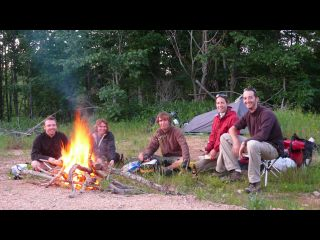
Nous avons passé de bons moments ensemble, et ces 3 compagnons de voyage nous ont aussi redonner de la pêche : au Chili nous nous étions habitués à pédaler 50 km par jour (et encore), avec eux nous avons grandement accéléré le rythme. Ca n'a pas toujours ete facile, car nous etions largement plus charges qu'eux.
Merci les amis. Et à la prochaine.
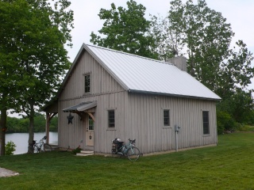
Nous avons croisé avec nos 3 amis sur une piste cyclable de l'Ohio Dan et Elsie. Le soir, comme nous finissions d'installer nos tentes sur une pelouse (avec l'aval du policier local), Dan et Elsie reviennent en voiture et nous offrent leur "cabin", leur maison de vacances, qui se trouve au bord d'un lac à une trentaine de kilomètres de là où nous sommes. Nous ne nous faisons pas prier et acceptons quasi immediatement. Nous apprenons le lendemain que Dan est né et a grandit dans une famille amish. Puis il a choisi de "sauter par dessus la barrière" ("he jumped over the fence") pour devenir Mennonite, le courant chrétien anabaptiste dont proviennent les Amish.
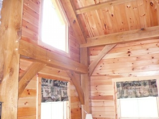
Les Mennonites prônent aussi une vie plus simple, et des valeurs familiales et amicales, mais sont beaucoup moins opposés au changement et aux technologies. La preuve, Dan et Elsie ont 2 grosses 4x4, une grande maison et leur "cabin" avec l'électricité. Vue la taille de la pelouse, ils ne doivent pas tondre manuellement. Et Dan dirige une entreprise de bâtiment. Il semble avoir gardé des contacts avec les communautés amish car c'est lui qui a construit le restaurant amish local (très bon et pas cher) et il a fait construire sa "cabin" par des ouvriers amish. Le résultat, tout en bois, est magnifique.
Notre après-midi de repos fut fort agréable.
Nous avons rencontré beaucoup d'autres personnes adorables aux Etats-Unis, entre autres la famille Eckler à Cincinnati, la famille French à Evansville, Wendell à Medina (ancien professeur de français et maintenant dentiste), la famille Simeral à Hiram...
Tous des gens très differents et adorables.
Vive les voyages et vive les rencontres !
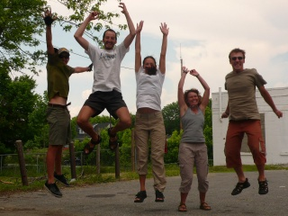
Bon. Une première rencontre intéressante : Linda et JC. J'attends devant le Walmart de Fulton (Mississippi) quand Linda s'approche de moi, me demande ce que je lis, puis m'invite à dormir chez elle. Je note son adresse (c'est juste à côté).
Quand Francis sort du supermarché tout chargé de denrées, je lui explique le deal. Il est partant et nous achetons vite une plante en pot (le vélo de Francis commence à ressembler à un train indien ou à un camion poubelle napolitain, comme vous préférez). Puis nous filons (tant bien que mal) chez Linda. Elle nous présente son mari, JC, très préoccupé par un petit poussin qui n'est pas au mieux de sa forme. Nous visitons ensemble leur grande maison quand JC nous demande si nous sommes croyants. Je dis que je suis catholique, et Francis explique qu'il est athée. JC réplique qu'il aura donc avec nous une petite conversation.
JC nous demande ensuite si nous sommes mariés. Nous répondons que nous sommes fiancés, et Linda nous montre alors nos deux chambres, séparées. Oups ?!
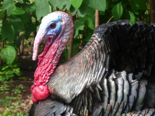
Ceci étant fait, JC nous fait une démonstration de son équipement de chasseur de dindes sauvages. C'est très drôle de le voir camouflé, avec ses vêtements pleins de feuilles, et en train de pousser des petits cris censés imiter l'appel de la femelle. Il nous montre ses trophées de chasse : les barbes des dindes qu'il a tuées. Il y en a moultes. La taille de la barbe augmente avec l'âge, et l'on n'est pas censé tuer des jeunes, mais il y a tout de même quelques petites barbes dans la boîte. Il nous explique que les quotas dans le Mississippi sont de 3 dindes par an et par chasseur. Mais l'année dernière il en a tué 7 : une fois 2 en un tir, une autre fois 3, et une au Tennessee !
Après avoir bien ri, c'est l'heure de la petite discussion.
Linda nous apporte de quoi dîner, et une bible. Et là, JC tente une démonstration de la véracité des écrits bibliques, de l'existence de Jesus, de Dieu et de l'enfer qui attend les brebis égarées comme nous. Il nous fait lire alternativement des passages de la Bible. C'est assez intéressant à voir, mais Francis se sent très mal à l'aise. Linda s'en rend probablement compte car elle demande a JC de passer à la fin de sa démonstration. Nous prétextons la fatigue pour échapper à la fin du discours.
Le lendemain matin, JC nous emmène petit-déjeuner au restaurant, et évite toute allusion biblique. Je pense qu'il s'est pris quelques reproches de sa femme.
Il nous dit juste qu'il a planté la petite graine. Je ne suis pas sûre qu'elle va pousser.
En partant, JC nous a donné quelques prospectus et les deux premières lessons de son mouvement, nommé "Back to the Bible". Parce qu'il existe trop de confessions chrétiennes, celle-ci se veut rassembliste et plus proche des textes bibliques.
Nous refusons une bible : nous sommes assez chargés.
Puis nous quittons nos hôtes, adorables mais un peu trop entreprenants.
Nous passons les semaines qui suivent à parler religions, et philosophie.
Deuxième rencontre : des cyclotouristes, Derek, Hanley et Wim.
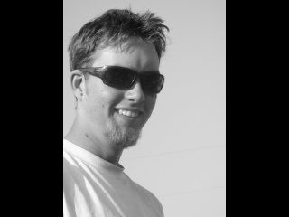
Derek est un jeune Canadien de 22 ans. Il est parti de Vancouver il y a un peu plus d'un an, abandonnant son poste dans une scierie. Son frère l'a suivi à la dernière minute. Et ils sont partis tous les 2 avec pour objectif d'atteindre le sud des Etats-Unis en descendant la côte Ouest. Ce faisant, Derek est devenu accroc et a continué jusqu'au Mexique, qu'il a traversé en 7 jours, et au Guatemala. Ayant un vélo droit de route, il a été confronté à l'omniprésence des pistes en Amerique centrale, et a décidé de repartir vers le Nord. Il a suivi la Underground Railroad avec nous et nous a quitté peu avant Cincinnati, en direction de Boston, puis Halifax et Vancouver. Ce drôle de garçon se nourrit de haricots rouges en boîte à tous les repas, généralement froids et directement dans la boîte pour gagner du temps. Depuis qu'on l'a rencontré, je lui ai appris à faire de la purée en sachet. Et Derek alterne maintenant "beans" et purée.
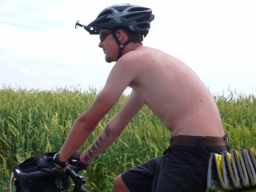
Il aime pédaler doucement avec d'autres, mais quand il pédale seul, il va "stupid fast". Ainsi son premier voyage a vélo totalisera plus de 30000 km en un an et demi. Et il ne compte pas s'arrêter là. Selon nous, c'est un grand espoir du cyclotourisme. A noter, le tatouage qu'il a sur l'avant bras droit...Quand on vous dit que ce gars la est serieux !
Wim et Hanley sont sud-africains et parlent donc l'afrikaans. Nous n'avons pas retenu grand chose de nos leçons, sauf 2 expressions : " laka bru" ("c'est cool mon pote") et "bak ballas" (litéralement "se les dorer au soleil", en pratique "profiter du bon temps").
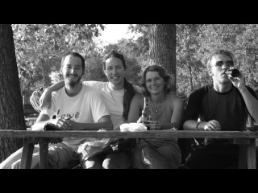
Wim vient d'une famille nombreuse et n'a pas pu aller à l'université, car il n'y a pas vraiment de système d'éducation (ou de santé d'ailleurs) public en Afrique du Sud ; les universités coutent donc très cher. Il est informaticien "bases de donnees" autodidacte, a travaillé entre autres à Téhéran 6 mois et à Londres 1 an pour des compagnies de téléphonie mobile. Il aimerait créer sa propre entreprise en rentrant en Afrique du Sud.
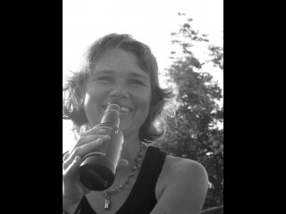
Hanley a un diplôme d'enseignante mais ne souhaite pas enseigner. Elle a travaillé dans le domaine de l'édition et souhaiterait écrire des romans. Elle a déjà publié quelques nouvelles en afrikaans dans des revues.
Nous avons appris beaucoup de choses sur l'Afrique du Sud grâce à eux. Apparemment, l'insécurité est un gros problème actuellement. Dès que les habitants ont assez d'argent, ils se font construire un grillage électrifié autour de leur maison. Le vote des Noirs a été accepté par référendum en 1993 et les premières élections au suffrage universel ont eu lieu en 1995 !!
Wim et Hanley ont connu la ségrégation, avec les écoles pour blancs, les plages pour blancs, les toilettes pour blancs... Apparemment, le gouvernement a introduit des quotas pour que les Noirs aient accès aux emplois, mais n'a pas créé en parallèle un système d'éducation pour tous. Du coup, les patrons se doivent d'employer des Blacks, mais ceux-ci ne sont souvent pas qualifiés, et ça ne marche donc pas. Ils les renvoient les uns après les autres. Du coup il y a beaucoup d'instabilité et de pauvres.
Ils ont introduit des lois interdisant les propos à caractère raciste, et il y a apparemment de nombreux procès. Dans les campagnes et chez les anciennes générations, les pensées racistes sont encore monnaie courante. Les blancs se font parfois encore appeler "Mister", alors que c'est théoriquement interdit.
Les jeunes espèrent des jours meilleurs mais beaucoup fuient. La soeur de Wim a fuit en Australie après qu'un cambrioleur soit venu piller sa maison de nuit et ait demandé à ses enfants où était la chambre des parents en poitant une arme sur eux. La petite a répondu, et elle fait des cauchemards depuis, car elle a cru que l'homme allait tuer sa mère, et qu'elle en était responsable.
Espérons que tout cela s'arrange !
Avec Hanley et Wim, nous sommes allés presque jusqu'au lac Erie. Puis ils nous ont quitté car ils devaient rentrer sur Londres puis en Afrique du Sud.
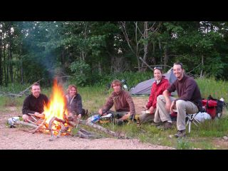
Nous avons passé de bons moments ensemble, et ces 3 compagnons de voyage nous ont aussi redonner de la pêche : au Chili nous nous étions habitués à pédaler 50 km par jour (et encore), avec eux nous avons grandement accéléré le rythme. Ca n'a pas toujours ete facile, car nous etions largement plus charges qu'eux.
Merci les amis. Et à la prochaine.
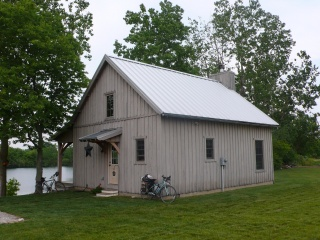
Nous avons croisé avec nos 3 amis sur une piste cyclable de l'Ohio Dan et Elsie. Le soir, comme nous finissions d'installer nos tentes sur une pelouse (avec l'aval du policier local), Dan et Elsie reviennent en voiture et nous offrent leur "cabin", leur maison de vacances, qui se trouve au bord d'un lac à une trentaine de kilomètres de là où nous sommes. Nous ne nous faisons pas prier et acceptons quasi immediatement. Nous apprenons le lendemain que Dan est né et a grandit dans une famille amish. Puis il a choisi de "sauter par dessus la barrière" ("he jumped over the fence") pour devenir Mennonite, le courant chrétien anabaptiste dont proviennent les Amish.
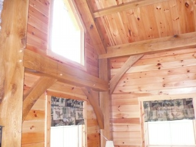
Les Mennonites prônent aussi une vie plus simple, et des valeurs familiales et amicales, mais sont beaucoup moins opposés au changement et aux technologies. La preuve, Dan et Elsie ont 2 grosses 4x4, une grande maison et leur "cabin" avec l'électricité. Vue la taille de la pelouse, ils ne doivent pas tondre manuellement. Et Dan dirige une entreprise de bâtiment. Il semble avoir gardé des contacts avec les communautés amish car c'est lui qui a construit le restaurant amish local (très bon et pas cher) et il a fait construire sa "cabin" par des ouvriers amish. Le résultat, tout en bois, est magnifique.
Notre après-midi de repos fut fort agréable.
Nous avons rencontré beaucoup d'autres personnes adorables aux Etats-Unis, entre autres la famille Eckler à Cincinnati, la famille French à Evansville, Wendell à Medina (ancien professeur de français et maintenant dentiste), la famille Simeral à Hiram...
Tous des gens très differents et adorables.
Vive les voyages et vive les rencontres !
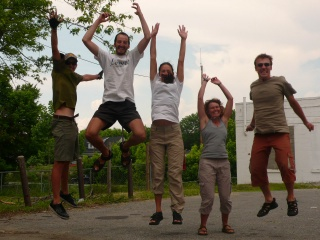


Unregistered user # Friday, July 10, 2009 9:22:16 PM
Hélène FRON & Francis CHABOUISf6-ln # Saturday, July 11, 2009 5:24:53 PM
Voyage...a velo, en auto, en bateau en radeau ?
on en parlera a notre retour
bisous
Francis